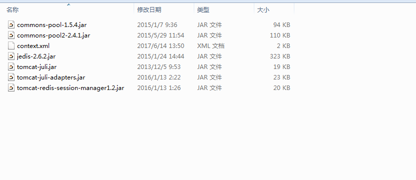

redis+tomcat+nginx 实现 session共享
目前的web应用集群，使用Nginx做负载均衡，将upstream配置成ip_hash的方式，这种模式下，Nginx会根据来源IP和后端配置来做hash分配，确保固定IP只访问一个后端
upstream YOUR_NAME {
ip_hash;
server 192.168.8.15:8080;
server 192.168.8.17:8080;
}
但是，由于固定某个IP只能访问单独的一个后端，如果宕机或者需要升级程序时做停机重启，正在操作的用户就会退出到登录页面，不仅用户体验很差，而且正在做的操作不能保证成功，容易产生脏数据等。
从Nginx upstream配置说起
1）轮询
upstream YOUR_NAME {
server 192.168.8.15:8080;
server 192.168.8.17:8080;
}
2）权重：该策略可解决服务器性能不等的情况下轮询比率的调配
upstream YOUR_NAME {
server 192.168.8.15:8080 weight=2;
server 192.168.8.17:8080 weight=3;
}
3）ip_hash
upstream YOUR_NAME {
ip_hash;
server 192.168.8.15:8080;
server 192.168.8.17:8080;
}
4）fair：需要安装Upstream Fair Balancer Module。该策略根据后端服务的响应时间来分配，响应时间短的后端优先分配
upstream YOUR_NAME {
server 192.168.8.15:8080;
server 192.168.8.17:8080;
fair;
}
5）一致性Hash：需要安装Upstream Consistent Hash Module，该策略可以根据给定的字符串进行Hash分配，具体参见官方Wiki。
由此可见，我们迫切的需要使用轮训的方式来做负载均衡，那对于大规模集群部署的web应用来讲，轮训的方式就要Session必须进行共享。
Session共享机制
在集群系统下实现Session共享机制一般有如下两种方案：
- 应用服务器间的Session复制共享（如Tomcat自带的Session共享）
- 基于缓存数据库的Session共享（如使用Memcached、Redis）
应用服务器间的Session复制共享
Session复制共享，主要是指集群环境下，多台应用服务器之间同步Session，使其保持一致，对外透明。如果其中一台服务器发生故障，根据负载均衡的原理，Web服务器（Apache/Nginx）会遍历寻找可用节点，分发请求，由于Session已同步，故能保证用户的Session信息不会丢失。
此方案的不足之处：
- 技术复杂,必须在同一种中间件之间完成(如Tomcat-Tomcat之间).
- Session复制带来的性能损失会快速增加.特别是当Session中保存了较大的对象,而且对象变化较快时, 性能下降更加显著. 这种特性使得Web应用的水平扩展受到了限制。
- Session内容序列化（Serialize），会消耗系统性能。
- Session内容通过广播同步给成员，会造成网络流量瓶颈，即便是内网瓶颈。
基于缓存数据库的Session共享
基于缓存数据库的Session共享是指使用如Memcached、Redis等Cache DB来存取Session信息：应用服务器接受新请求将Session信息保存到Cache DB中，当应用服务器发生故障，Web服务器（Apache/Nginx）会遍历寻找可用节点，分发请求，当应用服务器发现Session不在本机内存，则会去Cache DB中查找，如果找到，则复制到本机，这样就实现了Session的共享和高可用。
我选用的是redis而不是Memcached，是因为Redis具有更丰富的数据结构，比如可以为Key指定过期时间，从而不需要我们定期的刷新缓存。
1. 下载jar包
下载tomcat-redis-session-manager相应的jar包，

下载地址
http://download.csdn.net/detail/xiaoxiaosasasa/9403043
把下载的jar包拷贝到Tomcat目录下的lib中。
2. 在Tomcat的conf目录下，编辑context.xml。
如果你是用Redis单点，则可以仿照如下配置：
<Valve className=”com.orangefunction.tomcat.redissessions.RedisSessionHandlerValve” /》
<Manager className=”com.orangefunction.tomcat.redissessions.RedisSessionManager”
host=”47.93.60.217”
port=”6379”
database=”0”
maxInactiveInterval=”60” /》
如果是Redis集群环境，则可仿照如下配置：
<Valve className=”com.orangefunction.tomcat.redissessions.RedisSessionHandlerValve” /》
<Manager className=”com.orangefunction.tomcat.redissessions.RedisSessionManager”
database=”1”
maxInactiveInterval=”60”
sentinelMaster=”mymaster”
sentinels=”192.168.8.43:26379,192.168.8.45:26379,192.168.8.47:26379”
启动Tomcat，访问应用，即可在Redis中看到效果。
关于测试，可以将Nginx Upstream配置为轮询后，仅留一台应用服务器启动，登陆操作，然后启动另外一台，停止第一台服务，继续操作，发现并未受任何影响，即可。
资料：http://blog.csdn.net/onlysunnyboy/article/details/50513305